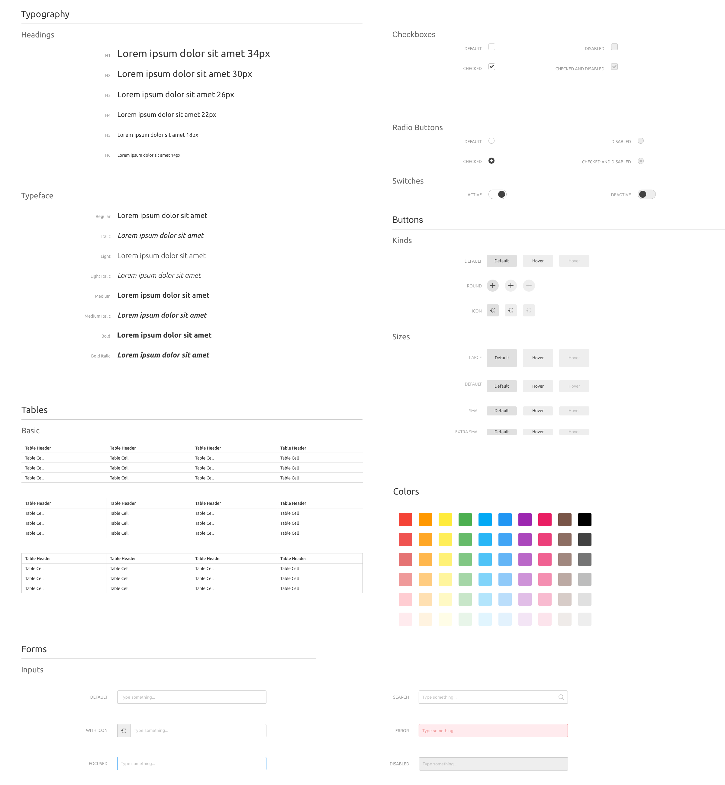

Customized Ui Framework
Фреймворк с возможностью кастомизации и отфильтрованного скачивания. У него есть определенные параметры выбора, продуманные под желания разных целевых групп (нужна более грубая анимация, большие кнопки, меньше прозрачности или наоборот).
Проблема
Большинство фреймворков сейчас – это груда непонятного кода, большой файл css и слишком сложный гайд по нему. Сейчас фреймворки не имеют возможности кастомизации: нельзя изначально выбрать, квадратные кнопки нужны в дизайне или со скругленными углами; теплые цвета или холодные. Нет возможности выбрать стиль будущего сайта и уже потом скачать кастомизированный файл фреймворка и начать работу.
Целевая аудитория
Творческие люди, которым нужно по-быстрому сделать портфолио
Маленькие фирмы, ИП, несерьезные компании
Учителя, репетиторы, частные врачи
Сайт под интернет-магазин
Ремонтные фирмы
Стартаперы для создания лэнндинга о своем стартапе
Крупные фирмы
Муниципальные учреждения (сайт города, сайт больницы)
Программисты, не шарящие в дизайне, которым быстро нужно сделать сайт-презентацию своего прототипа etc.
Решение
Для начала я делаю фреймворк без возможности кастомизации. Потому что для кастомизации нужно написать генератор кода. А для начала мне следует разработать просто обычный фреймворк.
Задачи
Провести ресерч существующих ui фреймворков, сравнить pros & cons и на основе этого сделать определенный вывод
Продумать структуру ui (кнопки, etc.)
Отрисовать в скетче структуру
Сверстать элементы (html, css)
Проработать анимацию элементов (javascript, react.js)
Сделать другие стилевые решения, когда сверстаю одно базовое
Начало работы над брендом и сайтом, над упаковкой всего
Dealing with different devices and browsers
Delivery // итоговая проработка
Риски
Не успеть поработать с исходными данными и в итоге не сделать кастомизированный фреймворк.
Команда
Полина Соколова